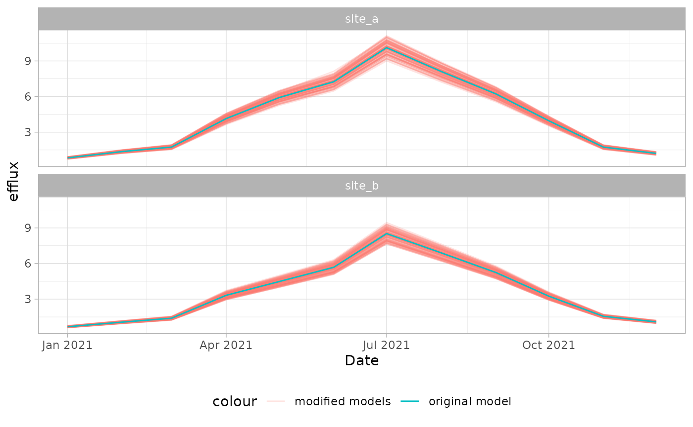

This vignette introduces a post-hoc calibration approach mainly aimed
at pro_flux() models. We will introduce the two steps
required, (I) a parameter variation with alternate() and
(II) the evaluation of the results with
evaluate_models().
library(ConFluxPro)
#>
#> Attaching package: 'ConFluxPro'
#> The following object is masked from 'package:stats':
#>
#> filterBackground and idea
Different input parameters of the flux-gradient method (FGM) affect
the modeled effluxes to a different extent. Most importantly, the soil
physics that we defined in soilphys can have significant
measurement and sampling uncertainties. The derived DS
values often require many input parameters and therefore have a high
uncertainty. At the same time,DS has a large effect on the
modeled efflux, leading to potential offsets and biases.
The following approach aims to quantify these effects and calibrate
ConFluxPro models. It is mostly intended to be used with inverse models
from the pro_flux() method. The basic idea is to modify the
values of the input parameters within a given range and re-run the
models to quantify the effect on the efflux. In a second step, different
parameters of model quality can be calculated to select the model runs
with the lowest model error.
Programatically, you will mainly interact with three functions:
cfp_run_map() to generate a plan on how to modify each
model for each run, alterante() to actually run all models
and evaluate_models() to calculate a model error for each
run and select the best results.
Let’s load in the basic model we generated in the last article.
cfp_run_map(): Plan model modifications
From a given model, we can generate a run_map, a plan on
how to modify each model for each run with the function
cfp_run_map(). We will now only consider the
method = "random" variant, where the parameter values in
each run are randomly sampled. This requires some input parameters.
First, we need to select the parameters we want to modify. These
parameters must come from the soilphys dataset. Keep the
number of parameters low, because too many degrees of freedom may
prevent the approach to converge on a specific parameter set.
Furthermore, different uncertainties can be balanced out by modifying a
single parameter. For example, a too high SWC can be compensated with a
lower TPS or vice versa.
Here will select to only adapt the TPS within each
layer. We also need to tell the function, in what range we want to
modify the parameter and how to modify it. Here, we have different
options. We can either give a specified range in absolute values, for
type = "abs", subtract or add a certain amount from the
original value with type = "addition" or multiply it with a
given factor in type = "factor". For now, let’s select
type = "factor", and let the TPS modify for 90-110 % its
original value. We provide this information as a named list to the
param argument. The names of that list represent the
columns in soilphys and the limits are given as a vector of
length 2. The type of modification is given as type, a
vector of the same length as params. The last thing we now
have to provide is the number of model runs to generate by providing an
integer number to n_runs.
tps_run_map <-
cfp_run_map(mod_pf,
params = list("TPS" = c(0.9, 1.1)),
type = "factor",
method = "random",
n_runs = 100)With this we have a valid object of class cfp_run_map.
This object is a data.frame where each new run is
identified by the column run_id.
head(tps_run_map)
#>
#> A cfp_run_map to be used in alternate().
#> number of runs: 100
#> parameters to alternate:
#> param param_id
#> 1 TPS 1
#> run_id param value type gas param_id
#> 1 1 TPS 0.9161500 factor CO2 1
#> 2 2 TPS 1.0668666 factor CO2 1
#> 3 3 TPS 1.0201522 factor CO2 1
#> 4 4 TPS 0.9314417 factor CO2 1
#> 5 5 TPS 0.9014799 factor CO2 1
#> 6 6 TPS 0.9932787 factor CO2 1We can see that there is a new row for each run, and the value that
TPS will be multiplied with. In this case, the TPS of the
entire profile will be modified with the same factor for each run. We
can also select, that parameters within each layer should be modified
independent from another.
tps_run_map <-
cfp_run_map(mod_pf,
params = list("TPS" = c(0.9, 1.1)),
type = "factor",
method = "random",
n_runs = 100,
layers_different = TRUE)This generates a new TPS factor for each layer in
layers_map. If we take a look in the run_map
again, we now see that there are multiple rows for each
run_id with a different value for each
layer.
head(tps_run_map)
#>
#> A cfp_run_map to be used in alternate().
#> number of runs: 100
#> parameters to alternate:
#> pmap param param_id
#> 1 1 TPS 1
#> 2 2 TPS 2
#> pmap site gas run_id param value type param_id
#> 1 1 site_a CO2 1 TPS 1.0611360 factor 1
#> 2 1 site_a CO2 2 TPS 1.0628103 factor 1
#> 3 1 site_a CO2 3 TPS 0.9807822 factor 1
#> 4 1 site_a CO2 4 TPS 0.9436862 factor 1
#> 5 1 site_a CO2 5 TPS 0.9836723 factor 1
#> 6 1 site_a CO2 6 TPS 1.0337741 factor 1We can extract the different parameters that are modified within the
run_map with cfp_params_df(). This shows the
mapping between each parameter and its identifier
(param_id). If layers_different = TRUE, then
each parameter of a new layer has its own param_id.
cfp_params_df(tps_run_map)
#> pmap param param_id
#> 1 1 TPS 1
#> 2 2 TPS 2We can also define these layers from a different source, either from
soilphys or by providing a custom data.frame.
For example, in the example dataset, TPS changes in four layers within
the soilphys. Assuming these are measurements of TPS, it makes sense to
vary the TPS within these boundaries as well. To do so, we first set
layers_from = "layers_altmap" and provide the new
cfp_layers_map(), that defines the layers for the parameter
variation.
library(dplyr)
#>
#> Attaching package: 'dplyr'
#> The following object is masked from 'package:ConFluxPro':
#>
#> n_groups
#> The following objects are masked from 'package:stats':
#>
#> filter, lag
#> The following objects are masked from 'package:base':
#>
#> intersect, setdiff, setequal, union
unique_tps <-
cfp_soilphys(mod_pf) %>%
group_by(site, TPS) %>%
summarise(upper = max(upper),
lower = min(lower)) %>%
cfp_layers_map(id_cols = "site",
gas = "CO2",
lowlim = 0, highlim = 1000)
#> `summarise()` has grouped output by 'site'. You can override using the
#> `.groups` argument.
#>
#> added 'gas' to id_cols
tps_run_map <-
cfp_run_map(mod_pf,
params = list("TPS" = c(0.9, 1.1)),
type = "factor",
method = "random",
n_runs = 100,
layers_different = TRUE,
layers_from = "layers_altmap",
layers_altmap = unique_tps)If we look into the result of cfp_params_df() again, we
can see that we now have one parameter for each layer and each site. So
in total we vary eight parameters.
cfp_params_df(tps_run_map)
#> param upper lower param_id
#> 1 TPS -40 -100 1
#> 2 TPS -23 -100 2
#> 3 TPS -13 -40 3
#> 4 TPS -7 -23 4
#> 5 TPS 0 -7 5
#> 6 TPS 0 -13 6
#> 7 TPS 5 0 7
#> 8 TPS 7 0 8By providing a layers_altmap, we can also specify
distinct limits for each layer individually. Let’s say the measurement
of TPS in the lower soil had a lower variation that in the topsoil. We
can generate different limits within each layer:
unique_tps_with_limits <-
unique_tps %>%
mutate(TPS_delta = ifelse(lower <= -20, 0.02, 0.04)) %>%
mutate(TPS_min = TPS - TPS_delta,
TPS_max = TPS + TPS_delta)All we have to do now is tell cfp_run_map to use these
columns in layers_altmap as the new limits. We change the
numeric limits (c(0.9, 1.1) into a character vector
specifying the columns where these values are stored
c("TPS_min", "TPS_max"). Depending on our setting in
layers_from, the function will search for these columns in
the respective dataset. Because the new values we provided are actual
TPS values, and not factors, we also have to adjust the
type to "abs".
tps_run_map <-
cfp_run_map(mod_pf,
params = list("TPS" = c("TPS_min", "TPS_max")),
type = "abs",
method = "random",
n_runs = 100,
layers_different = TRUE,
layers_from = "layers_altmap",
layers_altmap = unique_tps_with_limits)Whichever run_map you generated, the next step is to
apply it to modify a model. This happens within the function
alternate(), which will be discussed now.
alternate(): Run modified models
To apply a cfp_run_map() to a model, we use the function
alternate(). We provide both the original model, and the
run_map we created above. The last thing we need is a
function that re-calculates the soilphys dataset. Because
within each run, the TPS value will be adjusted, we have to re-calculate
the AFPS and the diffusion coefficient that was calculated from it. In
our case, we can use the complete_soilphys() function.
Depending on how your parameters are named and how they relate to
another, you may have to write your own function for that.
mod_pf_alt <- alternate(
mod_pf,
f = function(x) complete_soilphys(x, DSD0_formula = "a*AFPS^b", quiet = TRUE),
run_map = tps_run_map
)alternate() returns an object of class
cfp_altres. This is simply a list of model results, with
which you can interact as usual. For example, you can access the efflux
of the third run like so:
efflux(mod_pf_alt[[3]]) |>
head()
#>
#> A cfp_profile object
#> id_cols: site Date gas
#> 6 unique profiles
#>
#> site Date gas efflux prof_id
#> 1 site_a 2021-01-01 CO2 0.8754202 1
#> 2 site_b 2021-01-01 CO2 0.6784071 2
#> 3 site_a 2021-02-01 CO2 1.4312066 3
#> 4 site_b 2021-02-01 CO2 1.0669665 4
#> 5 site_a 2021-03-01 CO2 1.8308830 5
#> 6 site_b 2021-03-01 CO2 1.3981755 6We can also do so for all runs at the same time. This binds the
result together and adds the function run_id.
EFFLUX_alt <-
efflux(mod_pf_alt)
EFFLUX_alt |>
head()
#>
#> A cfp_profile object
#> id_cols: site Date gas run_id
#> 6 unique profiles
#>
#> site Date gas efflux prof_id run_id
#> 1 site_a 2021-01-01 CO2 0.8080752 1 1
#> 2 site_b 2021-01-01 CO2 0.6703889 2 1
#> 3 site_a 2021-02-01 CO2 1.3268966 3 1
#> 4 site_b 2021-02-01 CO2 1.0514539 4 1
#> 5 site_a 2021-03-01 CO2 1.6898789 5 1
#> 6 site_b 2021-03-01 CO2 1.3814571 6 1Let’s visualize this to see how much the efflux changed only by slightly varying the TPS of the model layers:
library(ggplot2)
EFFLUX_alt %>%
ggplot(aes(x = Date,
y = efflux,
group = run_id,
col = "modified models"))+
geom_line(alpha = 0.2)+
geom_line(data = efflux(mod_pf),
aes(group = NA, col = "original model"))+
facet_wrap(~site, ncol = 1)+
theme_light()+
theme(legend.position = "bottom")
evaluate_models(): Find the effective parameter set
The results stored in mod_pf_alt are different model
runs with different parameterizations. Some may have improved the model,
while some may have made it worse. To select the best model runs, we
have to quantify the model quality of each run. ConFluxPro comes with
two functions that estimate a specific error of the model,
error_concentration() and error_efflux(). The
first, error_concentration() quantifies the difference
between the measured and modeled concentration profiles and is only
applicable to pro_flux() models. The second,
error_efflux() compares the estimated effluxes to reference
measurements (e.g. chamber method). We could combine both errors and
select the model run with the smallest overall error.
This whole process is streamlined within
evaluate_models(). Here, you can provide a list of error
parameters to calculate. The function applies each function to all model
runs, scales and combines the returned error parameter and returns a
list of the ‘best’ model runs. Let’s do so with the model runs
mof_pf_alt we calculated before. Since we don’t have actual
reference measurements, let’s pretend that the efflux estimate of the
original, unaltered model were chamber measurements we conducted. This
is just to demonstrate the process.
EFFLUX_ref <- efflux(mod_pf)With this, let’s evaluate the models.
mod_pf_eval <- evaluate_models(mod_pf_alt,
eval_funs = list(
"error_concentration" = error_concentration,
"error_efflux" = error_efflux),
eval_weights = c(1, 1),
param_cols = c("site"),
eval_cols = c("site"),
n_best = 5,
scaling_fun = scale_min_median,
EFFLUX = EFFLUX_ref)
#> Joining with `by = join_by(error_parameter)`We defined two types of errors in our call within the
eval_funs argument. The first is the difference between the
modeled and the measured concentration profile as calculated by
error_concentration(). The second is the difference between
modeled and measured efflux returned by error_efflux().
While we don’t have a real measurement of efflux in this case, we
provide the ‘measured’ efflux as described above as an additional
argument in EFFLUX = EFFLUX_ref. These functions (and any
we may write ourselves) must take the parameter param_cols,
indicating for which parameters a distinct error will be calculated. We
set this to be "site" because we want to calibrate each of
our sites individually. The function calculates an error parameter for
each combination of error_funs and param_cols.
You can define weights for each error parameter in
eval_weights. Finally, each parameter is scaled between the
runs. Here we set scaling_fun = scale_min_median, which
means that the best run for this parameter has a value of 0 and the best
50% of runs are <1. For each value in eval_cols, all
scaled parameters are multiplied with their weighing factor and summed
up to an overall estimate of the model quality. Finally, we select the 5
best runs with the lowest model error by providing
n_best = 5.
Let’s have a look at the result. evalueate_models()
returns a list with different elements. The runs with the lowest model
error are stored in best_runs.
mod_pf_eval$best_runs
#> # A tibble: 10 × 3
#> # Groups: site [2]
#> run_id site ME
#> <dbl> <chr> <dbl>
#> 1 69 site_a 0.299
#> 2 58 site_a 0.454
#> 3 93 site_a 0.614
#> 4 76 site_a 0.629
#> 5 49 site_a 0.640
#> 6 73 site_b 0.400
#> 7 87 site_b 0.476
#> 8 59 site_b 0.873
#> 9 32 site_b 0.875
#> 10 96 site_b 0.903We can see the run_id of the 5 best model runs for each
site and the corresponding overall model error ME. The
model error of all runs is stored in model_error…
mod_pf_eval$model_error |>
head()
#> # A tibble: 6 × 3
#> # Groups: run_id [6]
#> run_id site ME
#> <dbl> <chr> <dbl>
#> 1 69 site_a 0.299
#> 2 73 site_b 0.400
#> 3 58 site_a 0.454
#> 4 87 site_b 0.476
#> 5 93 site_a 0.614
#> 6 76 site_a 0.629…and the exact values of each parameter in
models_evaluated.
mod_pf_eval$models_evaluated |>
head()
#> # A tibble: 6 × 6
#> # Groups: error_parameter, site [2]
#> error_parameter site NRMSE run_id sNRMSE parameter_weight
#> <chr> <chr> <dbl> <dbl> <dbl> <dbl>
#> 1 error_concentration site_a 0.207 1 0.949 1
#> 2 error_concentration site_b 0.246 1 1.50 1
#> 3 error_concentration site_a 0.197 2 0.709 1
#> 4 error_concentration site_b 0.237 2 0.970 1
#> 5 error_concentration site_a 0.221 3 1.30 1
#> 6 error_concentration site_b 0.247 3 1.55 1If you have a lot of profiles (e.g. a long, hourly time series), it
may be necessary to run the calibration only on a subset of profiles
because of memory limitations. In this case, you will want to run the
entire model again, once a good parameterization was found. To
facilitate this, evaluate_models() prepares a
cfp_run_map() with only the best runs which you can use
with the complete model in alternate(). This is stored in
best_runs_runmap.
calibrated_run_map <- mod_pf_eval$best_runs_runmapLet’s use this run map to calculate the calibrated models.
mod_pf_cal_list <- alternate(
mod_pf,
f = function(x) complete_soilphys(x, DSD0_formula = "a*AFPS^b", quiet = TRUE),
run_map = calibrated_run_map
)Finally, we can combine the returned list into a single model frame.
This adds a new column cmb_id to the id_cols
that identifies each model run.
mod_pf_cal <- combine_models(mod_pf_cal_list)
#>
#> validating datasets
#> id_cols: site, Date, gas, cmb_id
#> 120 unique profiles
mod_pf_cal
#>
#> A cfp_pfres pro_flux model result.
#> mean RMSE achieved: 0.033075
#> number of failed fits: 0
#>
#> A cfp_pfmod pro_flux model.
#> zero_flux: TRUE
#> zero_limits: -Inf Inf
#> DSD0_optim: FALSE
#> evenness_factor: 0
#> known_flux_factor: 0
#>
#> A cfp_dat object to be used as input in ConFluxPro models.
#> id_cols: site Date gas cmb_id
#> number of profiles: 120
#> number of groups: 2